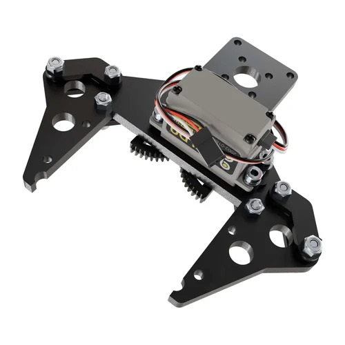
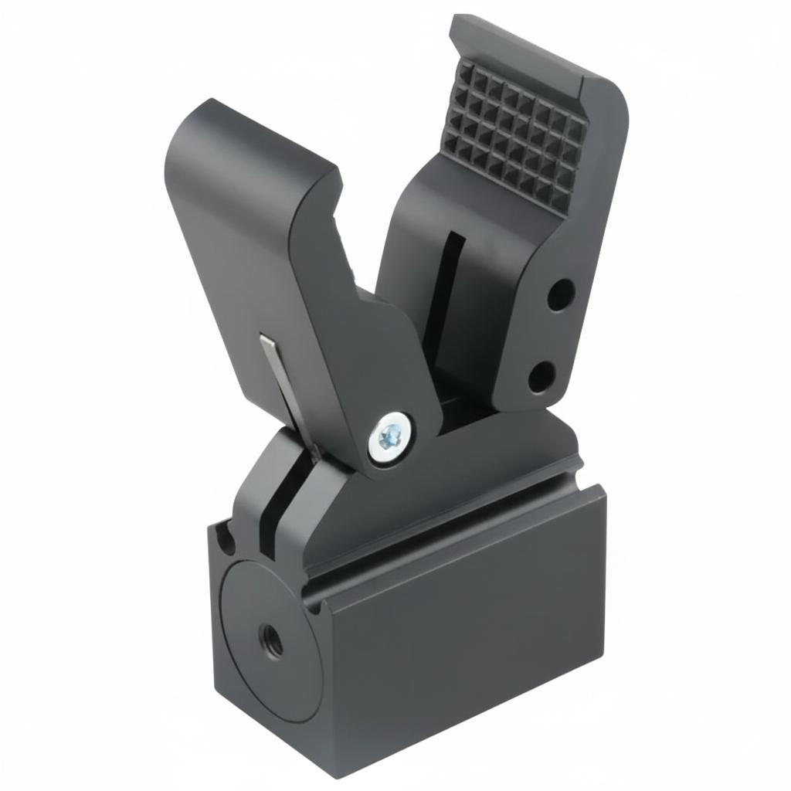
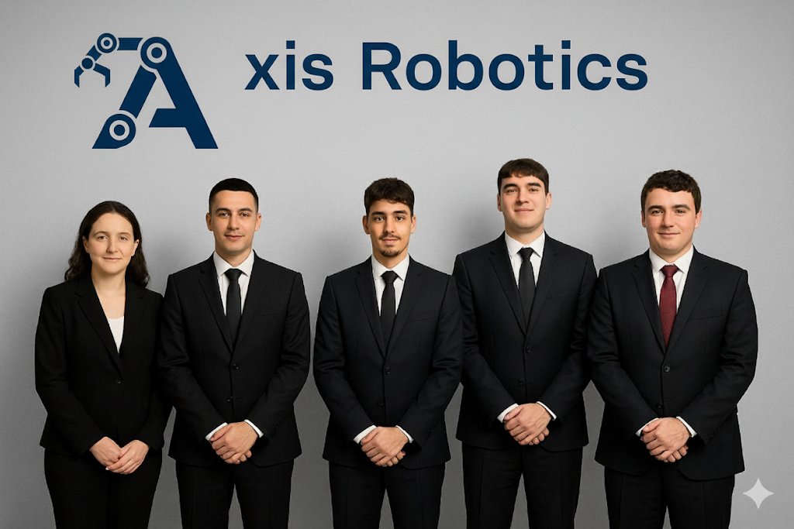
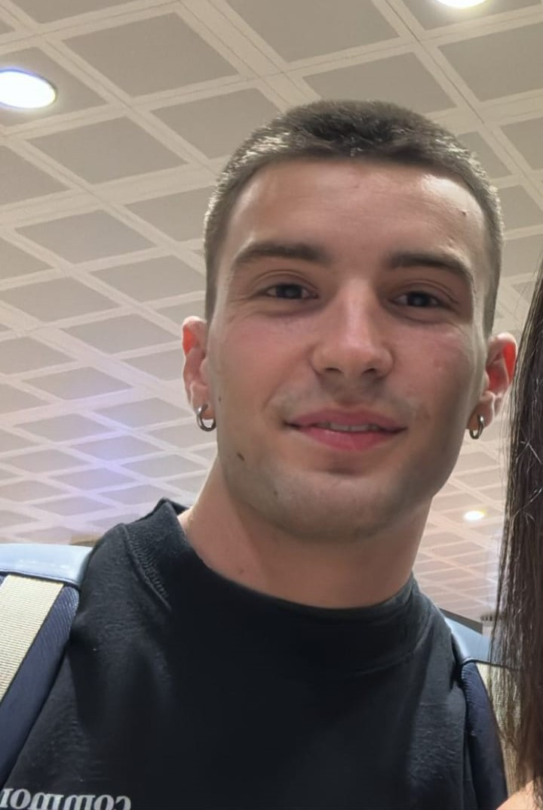
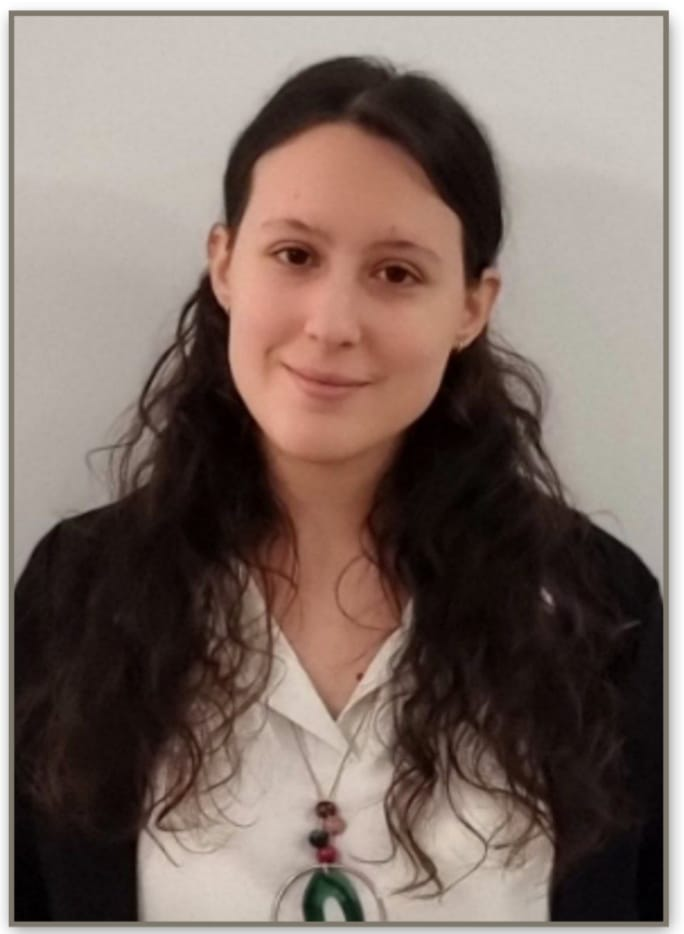

Cabezal adaptador universal.
Axis Robotics diseña y produce adaptadores de interfaz universales, la solución esencial para maximizar la versatilidad de su celda robótica. Nuestro componente innovador permite la combinación fluida de pinzas de diferentes marcas con una amplia gama de robots industriales. Estos adaptadores están meticulosamente diseñados para ofrecer un acoplamiento rápido, preciso y robusto, asegurando la perfecta integración de la fuerza de agarre, la velocidad operativa y la repetibilidad de la herramienta.



Ingeniero de procesos productivos

Ingeniero de diseño mecánico
Ingeniero de automatización y control
Ingeniero de layout y seguridad

Jefe de proyecto
Nuestros adaptadores de interfaz son el componente clave que desbloquea la versatilidad en las tareas de empaquetado y paletización. Al permitir la conexión de la pinza óptima (independientemente de su marca) al robot existente, aseguramos una solución que ofrece la velocidad, precisión y consistencia exigidas en la fabricación moderna, sin estar limitado por la compatibilidad.
Nuestros adaptadores robóticos agilizan el flujo de trabajo al garantizar la interoperabilidad inmediata entre diversas marcas de robots y herramientas. Esto permite a las empresas cambiar rápidamente entre diferentes tipos de pinzas para la carga y descarga de máquinas, ya sea para un agarre preciso de piezas delicadas o para una extracción rápida y segura de elementos calientes o peligrosos, maximizando la productividad y la flexibilidad del sistema.
¿Quieres saber más sobre Axis Robotics?